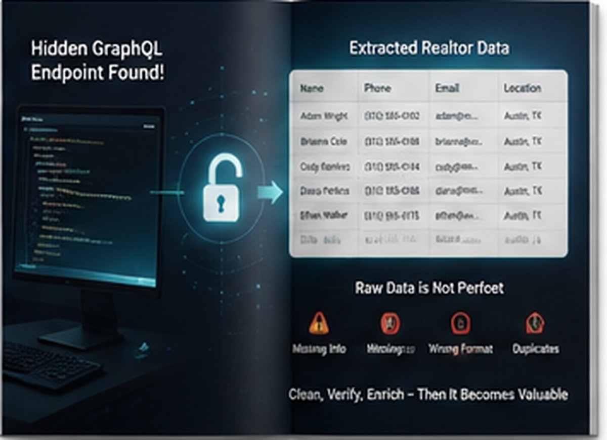

The eXp Realty Data Extraction Challenge That Changed How We Thought About Scraping
B2BProspects did not start as an abstract idea about building another scraper. It came from a practical problem: trying to extract realtor information from a website that did not behave like the sites we were used to scraping. The harder lesson came afterward—when the data could finally be reached, but the output still was not useful.
1. The Problem: A Website That Would Not Give Up Its Data Easily
For years, we had worked with website data and built scrapers for many different sources. We were comfortable with the usual challenges: finding selectors, handling pagination, parsing pages, cleaning output, and adapting scripts to different structures.
Then there was eXp Realty.
The goal was straightforward from a business perspective. We wanted realtor information, including names and phone numbers that could appear inside individual realtor bios and profile information. The problem was that the familiar scraping approach was not giving us the clean information we expected.
This was not simply a matter of writing another CSS selector. The website's structure and the way the information was delivered made the problem much more interesting. We spent a long time trying different approaches because the obvious route was not enough.
The experience exposed a weakness in the way we had been thinking about scraping. We were treating every difficult website as a request for a better custom scraper. But if every new website required a completely different reverse-engineering exercise, the process would never become easy to scale.
That frustration was the beginning of a different question: what would a scraper look like if it were designed to discover the data structure rather than assume the structure in advance?
The experience also changed how we thought about debugging. Instead of only asking why a selector failed, we started asking where the website's meaningful data model existed. That shift from surface-level selectors to data discovery was important because it made the problem more general. We were no longer trying to memorize a solution for one site; we were trying to understand a repeatable way of investigating difficult sources.
2. The Breakthrough: Reaching the Information Was Only Half the Problem
Eventually, the problem changed. We could reach the data we were looking for.
At first, that felt like the finish line. After spending so much time trying to understand the site, getting the underlying information to appear was a major breakthrough.
Then we looked at the output.
It was rubbish.
There was data, but there was not necessarily a clean dataset. Values were mixed with irrelevant information, and the extraction did not automatically understand which pieces belonged together. The experience was frustrating precisely because the technical problem had been solved enough to reveal the data-quality problem underneath it.
This was an important lesson. In website extraction, there are at least two separate questions.
The first is: “Can I reach the information?”
The second is: “Can I turn what I reached into useful records?”
Solving only the first question can create false confidence. A scraper can return thousands of values and still produce something that a human would never want to import into a CRM.
That realization changed the product idea. We did not just want a tool that could extract more. We wanted a workflow that made the result visible and reviewable.
The user should be able to see what was actually found, understand the fields, catch obvious problems, and decide whether the data is useful before exporting it.
The rubbish-data stage also exposed how easy it is to celebrate the wrong metric. A successful request is a technical event. A useful dataset is a business outcome. The distance between those two things is where much of the real work happens.
3. The Bigger Insight: Every Website Should Not Require a New Scraper
The eXp Realty experience made another problem obvious.
If you scrape enough websites, you eventually notice that each site has its own personality. One may be straightforward HTML. Another may rely on structured information. Another may behave like a full web application. A fourth may expose different information on directory pages and individual profiles.
Building a custom scraper for every source works when the number of sources is small. It becomes increasingly expensive when the goal is to work with many websites.
The idea behind B2BProspects came from wanting to reduce that repeated engineering work.
Instead of starting every project with “What selector do I need for this website?”, the product should help with the larger question: “Where is the useful information on this website, and can I extract it into a meaningful record?”
That is a different product philosophy.
It does not pretend that websites are identical. It acknowledges that they are different and makes discovery part of the workflow.
It also recognizes that the user needs control. A tool should show what it found rather than silently turning every piece of page content into a lead.
The result is a concept built around discover, extract, verify, and export. That sequence came directly from the problems we experienced ourselves.
That is why the product concept includes a preview. A user should not have to trust an extraction process simply because it returned a large number. Seeing the rows creates a feedback loop: the user can inspect the result, decide whether it makes sense, and then export it.

4. Why “I Extracted the Data” Is Not the Same as “I Have Good Data”
The rubbish-data stage of the eXp experience may have been more important than the initial breakthrough.
It taught us that extraction success is easy to misunderstand. If a program produces a response, it feels like progress. If it produces thousands of rows, it can feel like major progress. But neither tells you whether the records are useful.
Useful data has relationships.
A person's name should connect to that person's phone and email. A business name should connect to the correct domain and location. A realtor profile should connect to the relevant brokerage and contact details.
That means verification is part of extraction, not an optional afterthought.
This is why B2BProspects includes a review-oriented workflow. The objective is to make the captured records visible so a user can understand what the extraction actually produced.
The same philosophy influenced our thinking about ready-to-use realtor data. If someone buys a dataset, the important question is not simply how many records are in the file. The important question is what those records represent and whether the dataset meets the intended use.
The experience therefore shaped both sides of the product: the extraction tool and the prepared data offering.
The case also reinforced the importance of being honest about limitations. No website extraction product should claim universal success. Websites can change, restrict access, require authentication, use CAPTCHAs, or expose information differently. The product should help where it can rather than pretending those constraints do not exist.
5. What B2BProspects Is Trying to Solve Today
B2BProspects is the product that grew out of that frustration.
The goal is to make difficult website data work less repetitive. Instead of forcing users to build a separate custom scraper for every site, the product focuses on discovering accessible data, extracting useful records, letting users review the output, and exporting what they actually want.
That does not mean every website will work. Websites can require authentication, enforce rate limits, use CAPTCHAs, restrict access, or change their structure. Those are real constraints, and a responsible extraction workflow needs to respect them.
It also does not mean every extracted record is automatically verified. The review step remains important because websites can contain ambiguous information, duplicate records, office contacts, and unrelated values.
What we are trying to remove is the unnecessary repetition: the feeling that every new website requires starting from zero.
The eXp Realty challenge was one of the experiences that made that idea concrete. We wanted a tool that could help us investigate the data rather than simply assuming that every site behaved like the last one.
That is why the story behind B2BProspects is not really about one website. It is about a broader problem: useful information exists across the web, but finding it, extracting it in context, and turning it into trustworthy records can be much harder than the final page makes it look.
B2BProspects exists to make that workflow more practical.
Most importantly, the story explains why B2BProspects is not just a generic “scraper” idea. The product is based on a specific frustration: having the technical ability to scrape many websites but still needing a better way to investigate the difficult ones and distinguish useful records from rubbish output.
That lesson still guides how we think about every new extraction problem today.
It remains the foundation of our product philosophy.